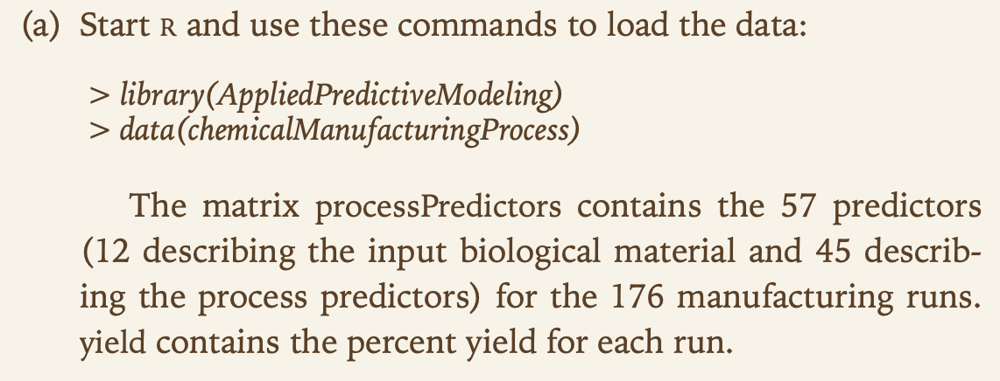
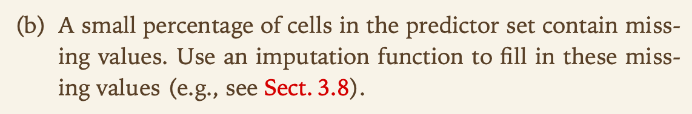
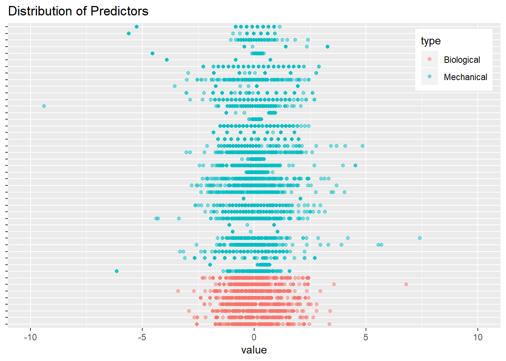
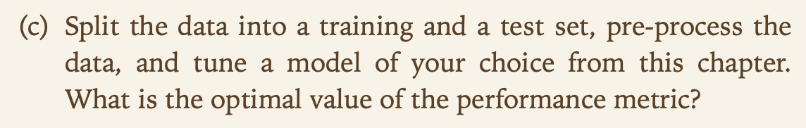
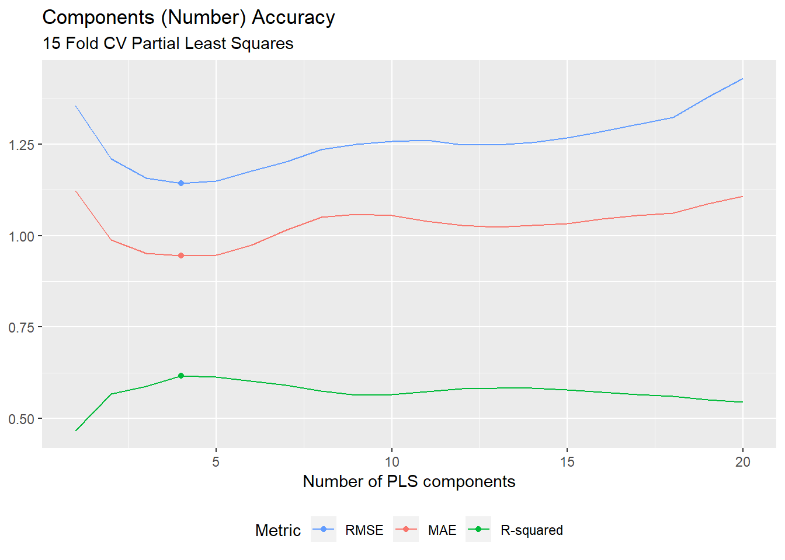
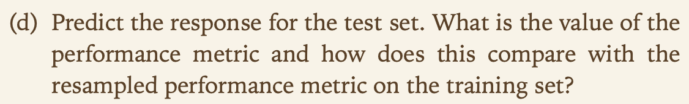
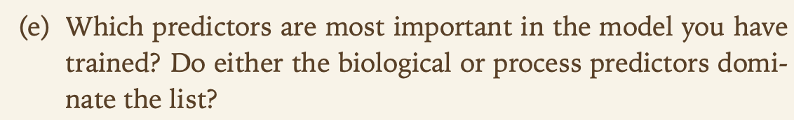
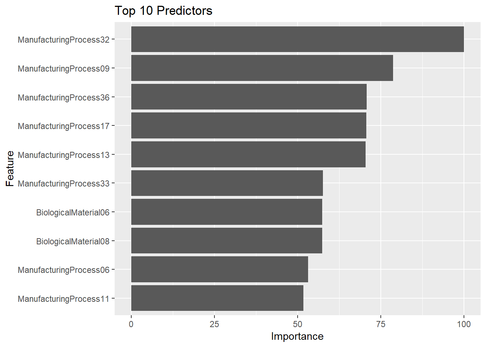

Chapter 2 KJ6
2.1 6.3

2.1.1 a

data("ChemicalManufacturingProcess")
data <- ChemicalManufacturingProcess %>%
as.data.frame()
# split dataset into predictors and yield
Xs <- data %>%
dplyr::select(-Yield)
y <- data %>%
dplyr::select(Yield)2.1.2 b

missing <- sum(is.na(Xs))
missingPercent <- missing/(nrow(data) * ncol(data))The 106 missing values corresponds to 1.04 of all the predictor data
missingPredictors <- Xs %>%
tidyr::gather(predictor, value) %>%
dplyr::group_by(predictor) %>%
dplyr::summarise(missing = sum(is.na(value))) %>%
dplyr::mutate(percent = (missing/sum(missing)) * 100) %>%
dplyr::filter(missing > 0) %>%
dplyr::arrange(desc(missing))
print(missingPredictors)## # A tibble: 28 x 3
## predictor missing percent
## <chr> <int> <dbl>
## 1 ManufacturingProcess03 15 14.2
## 2 ManufacturingProcess11 10 9.43
## 3 ManufacturingProcess10 9 8.49
## 4 ManufacturingProcess25 5 4.72
## 5 ManufacturingProcess26 5 4.72
## 6 ManufacturingProcess27 5 4.72
## 7 ManufacturingProcess28 5 4.72
## 8 ManufacturingProcess29 5 4.72
## 9 ManufacturingProcess30 5 4.72
## 10 ManufacturingProcess31 5 4.72
## # ... with 18 more rowsmissingPredictors$missing[c(1:3)]## [1] 15 10 9- All of the variables missing data describe Manufacturing Processes
- MP3, MP11, and MP10 make up 32.0754717% of the missing information
The data can be preprocessed and imputed
library(caret)
Xs_processed <- preProcess(Xs, method = c("knnImpute", "center", "scale", "nzv", "corr"))
# apply preprocessing and imputation
Xs_trans <- predict(Xs_processed, Xs)Lets just confirm the distribution of the transformed data to ensure appropriateness
Xs_trans %>%
gather(predictor, value) %>%
mutate(type = ifelse(substr(predictor, 1, 1) == "B", "Biological", "Mechanical"),
number = substr(predictor, nchar(predictor) - 1, nchar(predictor))) %>%
ggplot(aes(x = predictor, y = value)) +
geom_point(aes(col = type), alpha = 0.5) +
scale_x_discrete(NULL, labels = NULL) +
scale_y_continuous(limits = c(-10, 10)) +
coord_flip() +
ggtitle("Distribution of Predictors") +
theme(legend.position = c(1, 1), legend.justification = c(1.1, 1.1))
The plot confirms that the preprocessing did well
2.1.3 c

set.seed(7)
trainRows <- createDataPartition(y$Yield, p=.8, list = F)
# training sets
X_train <- Xs_trans[trainRows,]
y_train <- y[trainRows,]
# test sets
X_test <- Xs_trans[-trainRows,]
y_test <- y[-trainRows,]Lets check the correlation of the values
cor(Xs_trans) %>%
# convert to data frame
as.data.frame() %>%
# change row names to variable
rownames_to_column("predictorX") %>%
# convert to tidy format for plotting
gather(predictorY, cor, -predictorX) %>%
# plot
ggplot(aes(predictorX, predictorY)) +
geom_raster(aes(fill = cor)) +
scale_x_discrete(NULL, labels = NULL) +
scale_y_discrete(NULL, labels = NULL) +
viridis::scale_fill_viridis(NULL) +
ggtitle("Correlation between predictors") +
theme(legend.position = "bottom")
The correlation plot reveals that some correlation between variables still exists. We can attempt to recitfy this through the use dimensionality reduction
set.seed(7)
cv <- trainControl(method = "cv", number = 15)
trainCV <- train(x = X_train, y = y_train, method = "pls", tuneLength = 20, trControl = cv)trainCV$results %>%
ggplot(aes(x = ncomp)) +
geom_line(aes(y = RMSE, col = "RMSE")) +
geom_line(aes(y = Rsquared, col = "R-squared")) +
geom_line(aes(y = MAE, col = "MAE")) +
geom_point(data = data_frame(Metric = c("RMSE", "R-squared", "MAE"),
ncomp = c(which.min(trainCV$results$RMSE),
which.max(trainCV$results$Rsquared),
which.min(trainCV$results$MAE)),
Optimal = c(min(trainCV$results$RMSE),
max(trainCV$results$Rsquared),
min(trainCV$results$MAE))),
aes(x = ncomp, y = Optimal, col = Metric), size = 1.5) +
scale_color_discrete("Metric", breaks = c("RMSE", "MAE", "R-squared")) +
labs(title = "Components (Number) Accuracy",
subtitle = "15 Fold CV Partial Least Squares",
x = "Number of PLS components", y = NULL) +
theme(legend.position = "bottom", legend.direction = "horizontal")
The optimal model, based on RMSE, uses 4 components with an RMSE value of 1.1438829 based on the plot above
2.1.4 d

predictions <- predict(trainCV, X_test)
yhat_performance <- defaultSummary(data.frame(obs = y_test, pred = predictions)) %T>%
print## RMSE Rsquared MAE
## 1.1244684 0.6608926 0.9547169The RMSE is 1.1244684, which is slightly better than the RMSE on the training set
2.1.5 e

importantVars <- varImp(trainCV)##
## Attaching package: 'pls'## The following object is masked from 'package:caret':
##
## R2## The following object is masked from 'package:stats':
##
## loadingsimportantVars %>%
ggplot(top = 10) +
ggtitle("Top 10 Predictors")
- 7 of the Top 10 important variables are Manufacturing
- M32 is the most important registering 100% importance
2.1.6 f

top5 <- rownames(importantVars$importance)[order(importantVars$importance$Overall, decreasing = TRUE)][1:5]
top5_df <- as.data.frame(cbind(Xs_trans, y)[, c(top5, "Yield")])
top5_df %>%
gather(predictor, value, -Yield) %>%
ggplot(aes(x = value, y = Yield)) +
geom_point(alpha = 0.25) +
stat_smooth(se = FALSE, method = "glm") +
facet_wrap(~ predictor, nrow = 2, scales = "free") +
labs(title = "Top 5 Predictor Relationships")
- M09, M32 have positive relationships with Yield
- M13, M17, and M36 have negative relationships with Yield
- Using this information, increasing M09 and M32 will increase Yield, while decreasing the others will also increase Yield
- The relationships between the variables need to be explored first prior to adjusting manufacturing strategy